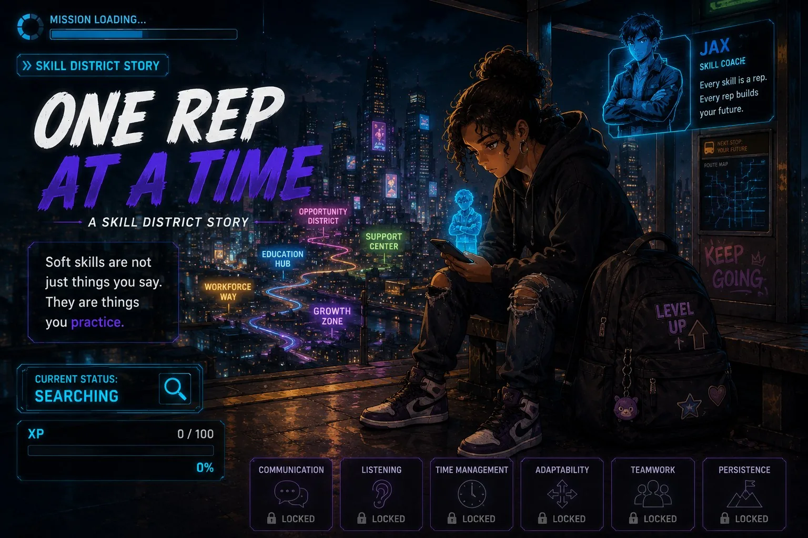

Skip to story and choices
LU
↗
LEVEL UP
SKILL DISTRICT · IMMERSIVE STORIES
CHAPTER 01 / 17
♪
Sound on
◖))
Hear story
?
Help
THE STORY OF MAYA
ONE REP AT A TIME
Small skills. Big possibilities.
SKILL STORY
01

INTERACTIVE SCENE
· TAP THE GLOWING MARKERS
Scene detail
×